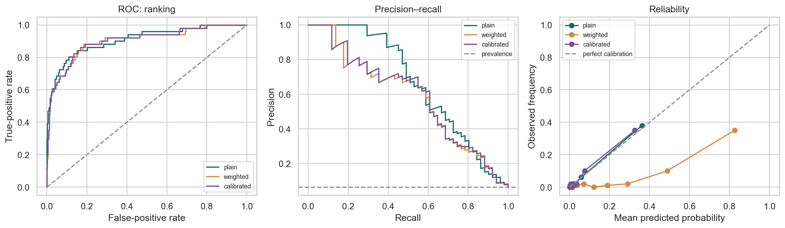

ML Hands-on Lab · Foundations
Metrics and calibration
1. The one-sentence version
Metrics tell you which mistakes a score makes, while calibration tells you whether a stated probability behaves like a probability.
2. The intuition
Think of a smoke alarm. Sensitivity asks how many real fires it catches. Precision asks how many alarms are actually fires. You can make it more sensitive by lowering its threshold, but then burnt toast rings more often. Calibration is different: among situations labelled “30% fire risk,” about three in ten should truly be fires.
A five-case example
True labels are [1, 0, 1, 0, 0]; predicted probabilities are [0.9, 0.8, 0.4, 0.3, 0.1]. At threshold 0.5, predictions are [1,1,0,0,0]. So TP=1, FP=1, FN=1, TN=2. Accuracy is 3/5=0.60. Precision is 1/2=0.50. Recall is 1/2=0.50. Lowering the threshold to 0.4 finds both positives, but also changes the workload.
3. The maths in plain English
\[\text{precision}=\frac{TP}{TP+FP},\qquad \text{recall}=\frac{TP}{TP+FN}\]
Precision's denominator is every alert; false positives make it smaller. Recall's denominator is every real positive; false negatives make it smaller. Which matters more depends on the decision cost.
\[\text{Brier}=\frac{1}{n}\sum_{i=1}^{n}(p_i-y_i)^2\]
\(p_i\) is the stated positive probability and \(y_i\) is 0 or 1. Confident wrong probabilities are punished most. Zero is perfect. Unlike ROC AUC, Brier loss cares about probability scale.
\[\text{calibrated at }p:\quad P(Y=1\mid \hat p=p)\approx p\]
If predictions near 0.30 become positive only 10% of the time, the model is overconfident in that region. Calibration maps score levels to observed frequencies.
4. What the model is actually doing during training
- Fit a classifier that produces a continuous score.
- Keep validation or cross-validation predictions separate from the rows used to fit each score model.
- Learn a monotonic mapping from raw score to observed frequency.
- Choose a decision threshold using a stated cost or operational constraint.
- Evaluate ranking, probability quality, and thresholded decisions separately on test.
5. The knobs
| Knob | Too low | Too high |
|---|---|---|
| Decision threshold | High recall, many false alarms. | High precision may come with missed positives. |
| Calibration bins | Important local errors are averaged away. | Each bin has too few cases and jumps around. |
| Class weight | The rare class may be ignored. | Scores can overstate positive probability. |
| Calibration flexibility | Sigmoid mapping may underfit. | Isotonic mapping may overfit small samples. |
6. Assumptions and failure modes
Metrics assume labels mean what you think they mean and the test prevalence resembles use. Precision changes with prevalence even when ranking does not. ROC AUC can look strong while positive retrieval is poor on a rare class. Calibration decays when base rates shift. Threshold tuning on test leaks a choice into the final audit.

7. Code
Minimal version
from sklearn.metrics import precision_score, recall_score
probability = model.predict_proba(X_test)[:, 1]
prediction = probability >= 0.30
print("precision", precision_score(y_test, prediction))
print("recall", recall_score(y_test, prediction))Realistic version
from sklearn.calibration import CalibratedClassifierCV
from sklearn.linear_model import LogisticRegression
from sklearn.pipeline import make_pipeline
from sklearn.preprocessing import StandardScaler
base = make_pipeline(StandardScaler(), LogisticRegression(
class_weight="balanced", max_iter=1000, random_state=0
))
model = CalibratedClassifierCV(base, method="sigmoid", cv=5)
model.fit(X_train, y_train)
# Pick threshold on validation, then freeze it for test.
test_probability = model.predict_proba(X_test)[:, 1]8. Where it's actually used
- Cancer screening, where missing disease and ordering extra tests have different costs.
- Payment fraud queues, where analysts can review only a fixed number of alerts.
- Weather forecasts, where a 30% rain forecast must be trustworthy across many days.
- Credit default estimates, where probability feeds pricing and capital calculations.
- Content moderation, where per-policy precision and recall matter more than overall accuracy.
9. How it relates to its neighbours
ROC and PR curves evaluate ranking; calibration evaluates probability meaning; a confusion matrix evaluates one threshold. F1 combines precision and recall but assumes they deserve equal harmonic weight. Cost-sensitive decision theory generalizes threshold selection by attaching explicit values to outcomes.